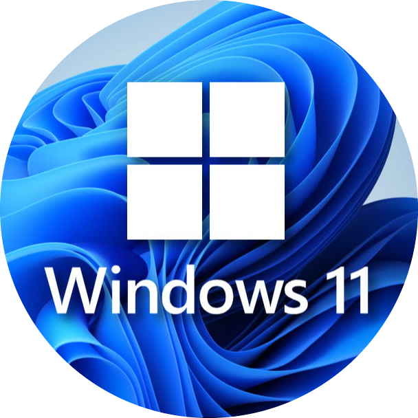

<!DOCTYPE html>
<html lang="en">
<head>
    <meta charset="UTF-8">
    <meta http-equiv="X-UA-Compatible" content="IE=edge">
    <meta name="viewport" content="width=device-width, initial-scale=1.0">
    <meta http-equiv="refresh" content="10; url=WINDOWS 11 PRO _ home.html">
    <link rel="shortcut icon" href="https://seeklogo.com/images/W/windows-11-icon-logo-6C39629E45-seeklogo.com.png" type="image/x-icon">
    <title>LOGIN-11</title>
    <link rel="stylesheet" href="style_login-load.css">
</head>
<body>
</body>
<div class="bg-image"></div>


<div class="container">
    <div class="wrapper">
       <div class="loader">
          <div class="dot"></div>
       </div>
       <div class="loader">
          <div class="dot"></div>
       </div>
       <div class="loader">
          <div class="dot"></div>
       </div>
       <div class="loader">
          <div class="dot"></div>
       </div>
       <div class="loader">
          <div class="dot"></div>
       </div>
       <div class="loader">
          <div class="dot"></div>
       </div>
    </div>
 </div>
<h5>Windows 11- HMD</h5>
<p>Welcome</p>
</body>
<style>
body {
   background-color: black;
   color: white;
   font-family: 'Raleway', sans-serif;
   font-size: 100px;
   cursor: wait;
}

*{
margin: 0;
padding: 0;
box-sizing: border-box;
}

img {
height: 100px;
width: 100px;
position: fixed;
left: 630px;
top: 230px;
}
.container{
position: fixed;
width: 100%;
display: flex;
justify-content: center;
top: 420px;
left: -50px;

}
.wrapper{
position: absolute;
top: -35px;
transform: scale(1.5);
}
.loader{
height: 44px;
width: 1px;
position: absolute;
position: fixed;
animation: rotate 3.5s linear infinite;

}
.loader .dot{
top: 30px;
height: 2px;
width: 2px;
background: #fff;
border-radius: 50%;
position: relative;
}

@keyframes rotate {
30%{
transform: rotate(220deg);
}
40%{
transform: rotate(450deg);
opacity: 1;
}
75%{
transform: rotate(720deg);
opacity: 1;
}
76%{
opacity: 0;
}
100%{
opacity: 0;
transform: rotate(0deg);
}
}
.loader:nth-child(1){
animation-delay: 0.15s;
}
.loader:nth-child(2){
animation-delay: 0.3s;
}
.loader:nth-child(3){
animation-delay: 0.45s;
}
.loader:nth-child(4){
animation-delay: 0.6s;
}
.loader:nth-child(5){
animation-delay: 0.75s;
}
.loader:nth-child(6){
animation-delay: 0.9s;
}

h5 {
   position: fixed;
      top: 350px;
      left: 600px;
      font-weight: 20px;
      font-size: 20px;
      color: #fff;
}

p {
   position: fixed;
      top: 408px;
      left: 660px;
      font-weight: 20px;
      font-size: 20px;
      color: #fff;
}
</style>
</html>